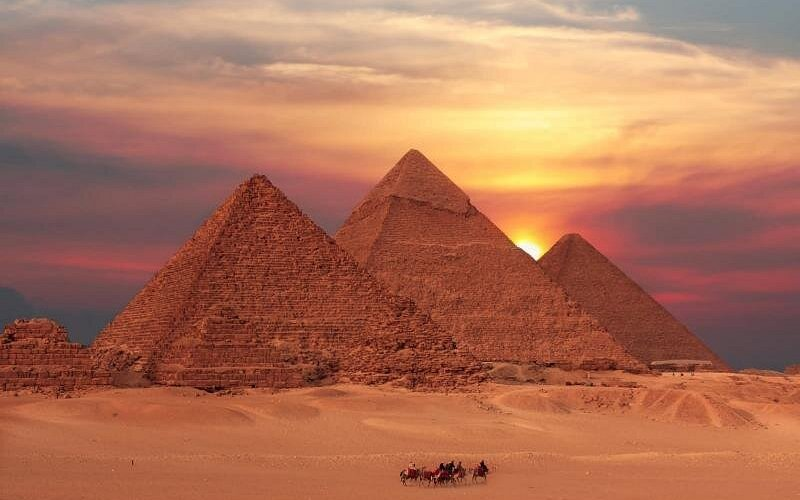

Пирамида Хеопса (также известная как Великая пирамида Гизы) — крупнейшая из египетских пирамид, памятник архитектурного искусства Древнего Египта. Единственное из «Семи чудес света», сохранившееся до наших дней.
Построена как гробница для фараона IV династии Хуфу (в греческой традиции — Хеопса). Первоначальная высота пирамиды составляла 146,6 м, однако из-за эрозии и утраты облицовки сегодня она равна примерно 138,8 м.
Пирамида оставалась самым высоким сооружением на Земле на протяжении более 3800 лет, пока в XIV веке не был завершён собор Линкольна в Англии.
Внутри пирамиды расположены три погребальные камеры. Самая нижняя высечена в скальном основании, две другие — Камера Царя и Камера Царицы — находятся выше. Гранитные блоки для внутренней отделки доставляли из Асуана, расположенного за 800 км от Гизы.